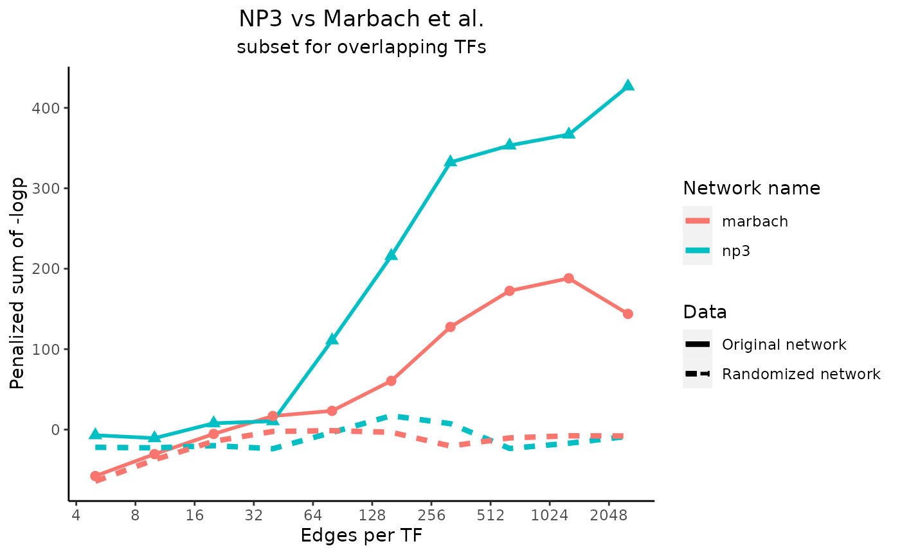
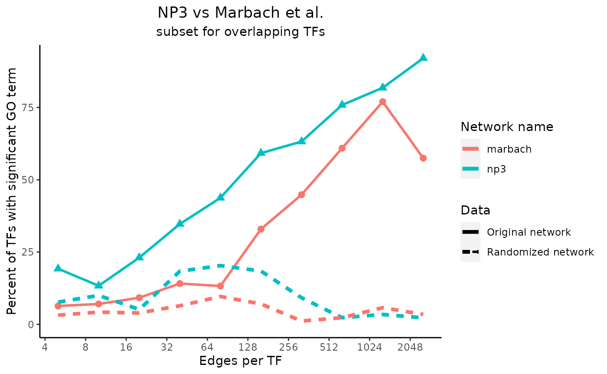
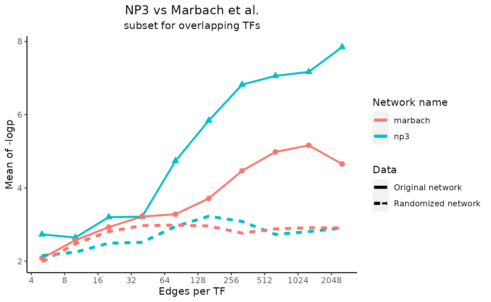
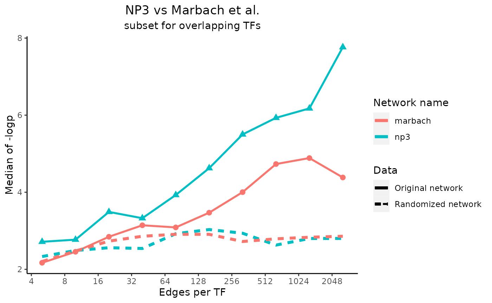
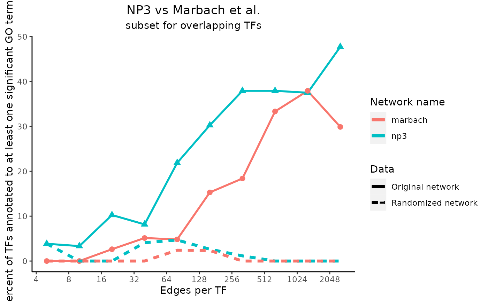

GOeval
GOeval.RmdFirst, install and load this package.
devtools::install_github("westbrooktm/GOeval", ref = "dev")Steps to use this package from original network to graphing the results:
subset_network to create network subsets with the top-weighted edges (not yet shown)
webgestalt_network on each of the network subsets to generate ORA results
get_metrics on the stored ORA results to calculate summary statistics for plotting
plot_metrics using the output of get_metrics
subset_network
“marbach_extract.tsv” contains 3 columns: the TFs, the regulated genes, and the scores.
This function creates files in the output_folder with only the rows that have the highest scores.
input_file <- file.path("data", "marbach_extract.tsv")
output_folder <- file.path("data", "marbach_network_subsets")
name <- "marbach"
edges <- c(64, 128, 256, 512, 1024, 2048, 4096, 8192)
perTF <- FALSE
subset_network(input_file, output_folder, name, edges, perTF)- webgestalt_network
Run ORA using the webgestalt_network function on “small_net_194”, which is a small example network with 5 TFs that have an average of 194 target genes. “small_net.tsv” is tab-separated with the first column containing the TF names and the second column containing the regulated gene names. “small_net_gene_universe.txt” contains one column of the names of all genes that could appear in the network.
Note organism = “hsapiens” and database = “geneontology_Biological_Process_noRedundant” is the default database for ORA.
You can see more options for organism and database with WebGestaltR::listOrganism() and WebGestaltR::listGeneSet() respectively.
webgestalt_network(network_path = file.path("data", "small_net.tsv"), reference_set = file.path("data", "small_net_gene_universe.txt"), output_directory = file.path("data", "small_net_output"), network_name = "small_net_194", permutations = 2)- get_metrics
Specify which metrics to calculate and use mapply to run get_metrics on each of the output_folders.
A wrapper function will be made in the near future so mapply will be unnecessary.
# Specify which folders contain the data for each network.
# Each element will be a folder used as the output folder for a call to webgestalt_network.
# For the sake of run time, the data used in this example was premade.
output_folders <- c(file.path("data", "np3_example"), file.path("data", "marbach_example"))
metric_dfs_by_net <- mapply(get_metrics, output_folders, MoreArgs=list(get_percent = TRUE, get_mean = TRUE, get_median = TRUE, get_annotation_overlap = TRUE, parallel = FALSE), SIMPLIFY = FALSE)- plot_metrics
# Specify the main titles of the output graphs
title_text = "NP3 vs Marbach et al."
subtitle_text = "subset for overlapping TFs"
plot_metrics(metric_dfs_by_net, title_text, subtitle_text)